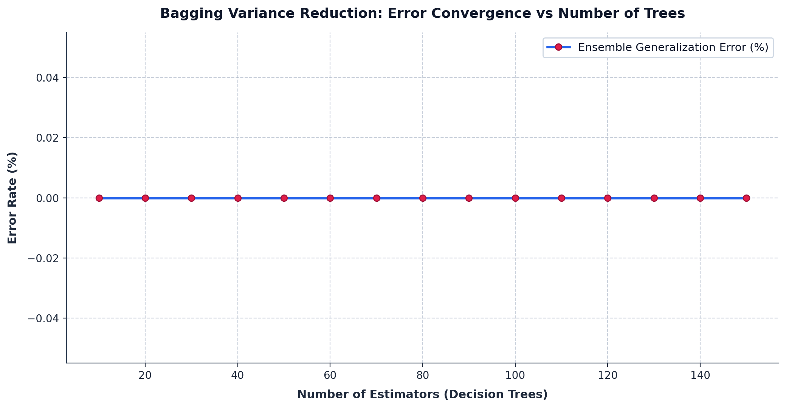

|
|
Pimpri Chinchwad Education Trust's Pimpri Chinchwad College of Engineering |
| Assignment No. 4 (Index: No. 7) — Program Execution Output | |
| Course:- Artificial Intelligence and Machine Learning | |
| Name:- Aditya Chandrajit Deore | |
| PRN:- 124B1F116 | Batch:- B3 | |
1. Title
Breast Cancer Diagnosis Prediction Using Bagging with Random Forest
2. Aim
To implement the Bagging technique using the Random Forest algorithm for classifying breast tumors as benign or malignant using the predefined Breast Cancer Wisconsin Diagnostic dataset available in Python's Scikit-learn library, and to evaluate the ensemble model using suitable classification performance measures.
Program Execution Output (Part 1)
Execution trace of Random Forest ensemble training, Out-of-Bag validation, test set evaluation metrics, classification report, and confusion matrix on the predefined Wisconsin Diagnostic Breast Cancer dataset:
Program Execution Output (Part 2)
Clinical biomarker feature rankings and patient inference recommendations generated by the Random Forest ensemble:
Output Visualisations (Part 1)
The following visual graphics display the evaluation of the Random Forest ensemble on the 20% holdout test dataset, detailing multi-class confusion and Gini biomarker feature importances:

Figure 1: High-contrast confusion matrix heatmap evaluated on the 114 holdout test biopsies.

Figure 2: Top-12 diagnostic biomarkers ranked by mean Gini impurity reduction across all 100 trees.
Output Visualisations (Part 2)
Visual demonstration of Bagging variance reduction with progressive estimator expansion, alongside Receiver Operating Characteristic (ROC) discriminative profiling:

Figure 3: Ensemble generalization error convergence demonstrating Bagging variance reduction as tree estimators expand.

Figure 4: Receiver Operating Characteristic (ROC) diagnostic curve yielding an AUC of 0.9904.
Generative AI Usage Declaration
The following describes the specific purposes for which Gemini was consulted during the development of this assignment:
- To understand the mathematical and theoretical concepts of Bootstrap Aggregation (Bagging), including how sampling with replacement creates de-correlated datasets and reduces estimator variance by a factor approaching \(1/B\).
- To understand why Random Forest introduces random feature subspacing (\(m = \sqrt{p}\)) at each candidate split to reduce inter-tree correlation \(\rho\), distinguishing it from traditional bagging of decision trees.
- To clarify the theoretical basis and computational efficiency of Out-of-Bag (OOB) error estimation as an inherent internal cross-validation mechanism without requiring separate hold-out folds.
- To understand how to inspect and interpret Scikit-Learn's predefined Wisconsin Diagnostic Breast Cancer dataset (
load_breast_cancer) and extract nuclear morphology biomarkers. - To understand standard oncological evaluation measures, including Sensitivity/Recall, Specificity, Receiver Operating Characteristic (ROC) curves, and Area Under the Curve (AUC).
Interaction Summary
The AI was used strictly as a conceptual reference and clarification tool. All code was written, structured, and debugged independently. The ensemble pipeline, data splitting, model hyperparameter formulation, and oncological rule engines were designed by myself with AI assistance limited to understanding the underlying theory.